How to target multiple platforms with your WinUI 3 app
Once you've created a starter Hello World WinUI 3 app, you might be wondering how to reach more users with a single codebase. This how-to will use Uno Platform to expand the reach of your existing application enabling reuse of the business logic and UI layer across native mobile, web, and desktop.
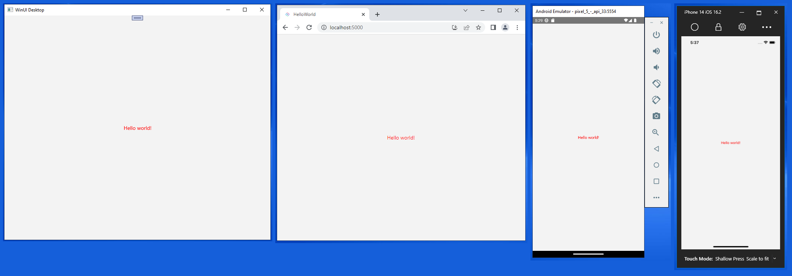
Prerequisites
- Visual Studio 2022 17.4 or later
- Set up your development computer (see Get started with WinUI)
- ASP.NET and web development workload (for WebAssembly development)
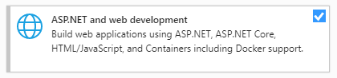
- .NET Multi-platform App UI development installed (for iOS, Android, Mac Catalyst development).
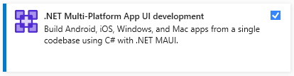
- .NET desktop development installed (for Gtk, Wpf, and Linux Framebuffer development)
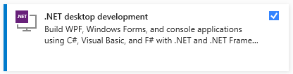
Finalize your environment
Open a command-line prompt, Windows Terminal if you have it installed, or else Command Prompt or Windows Powershell from the Start Menu.
Install or update the
uno-checktool:Use the following command:
dotnet tool install -g uno.checkTo update the tool, if you already have previously installed an older version:
dotnet tool update -g uno.check
Run the tool with the following command:
uno-checkFollow the instructions indicated by the tool. Because it needs to modify your system, you may be prompted for elevated permissions.
Install the Uno Platform solution templates
Launch Visual Studio, then click Continue without code. Click Extensions -> Manage Extensions from the Menu Bar.
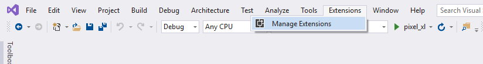
In the Extension Manager expand the Online node and search for Uno, install the Uno Platform extension, or download it from the Visual Studio Marketplace, then restart Visual Studio.
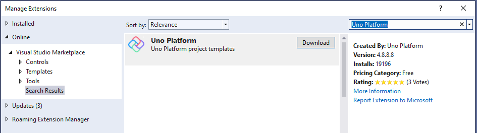
Create an application
Now that we are ready to create a multi-platform application, the approach we'll take is to create a new Uno Platform application. We will copy XAML code from the previous tutorial's Hello World WinUI 3 project into our multi-platform project. This is possible because Uno Platform lets you reuse your existing codebase. For features dependent on OS APIs provided by each platform, you can easily make them work over time. This approach is especially useful if you have an existing application that you want to port to other platforms.
Soon enough, you will be able to reap the benefits of this approach, as you can target more platforms with a familiar XAML flavor and the codebase you already have.
Open Visual Studio and create a new project via File > New > Project:
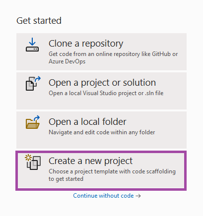
Search for Uno and select the Uno Platform App project template:
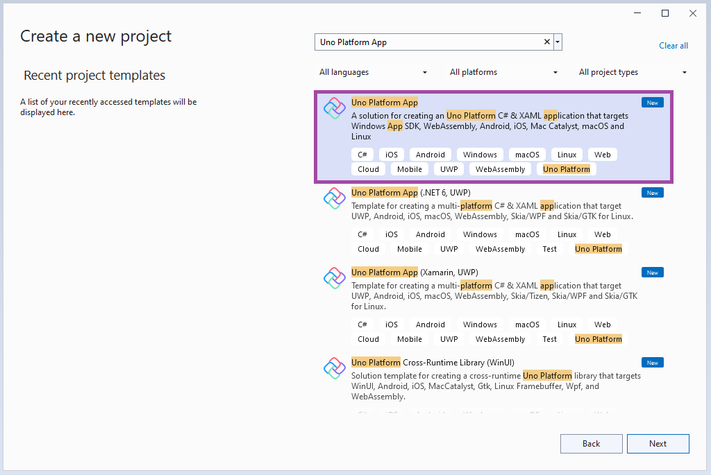
Specify a project name, solution name, and directory. In this example, our Hello World MultiPlatform project belongs to a Hello World MultiPlatform solution, which will live in C:\Projects:
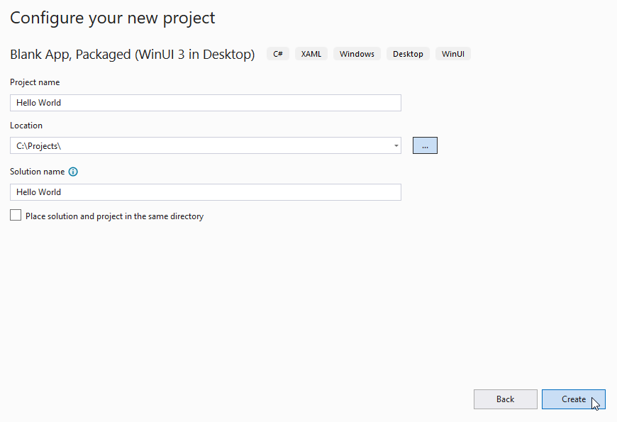
Create a new C# solution using the Uno Platform App type from Visual Studio's Start Page. To avoid conflicting with the code from the previous tutorial, we'll give this solution a different name, "Hello World Uno".
Now you'll choose a base template to take your Hello World application multi-platform. The Uno Platform App template comes with two preset options that allow you to quickly get started with either a Blank solution or the Default configuration which includes references to the Uno.Material and Uno.Toolkit libraries. The Default configuration also includes Uno.Extensions which is used for dependency injection, configuration, navigation, and logging, and it uses MVUX in place of MVVM, making it a great starting point for rapidly building real-world applications.
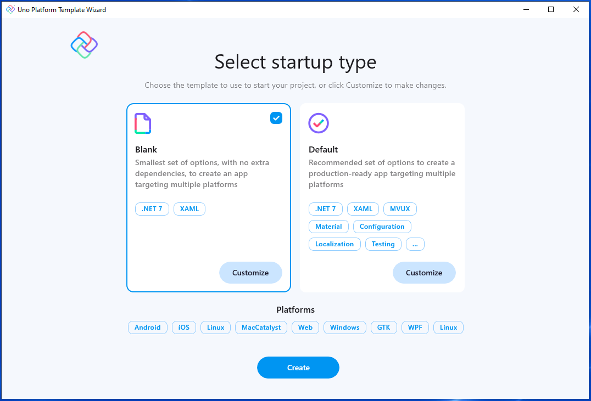
To keep things simple, select the Blank preset. Then, click the Create button. Wait for the projects to be created and their dependencies to be restored.
A banner at the top of the editor may ask to reload projects, click Reload projects:
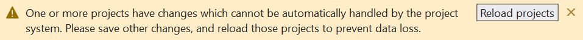
Building your app
Now that you've generated the functional starting point of your multi-platform WinUI application, you can copy markup into it from the Hello World WinUI 3 project outlined in the previous tutorial.
You should see the following default file structure in your Solution Explorer:
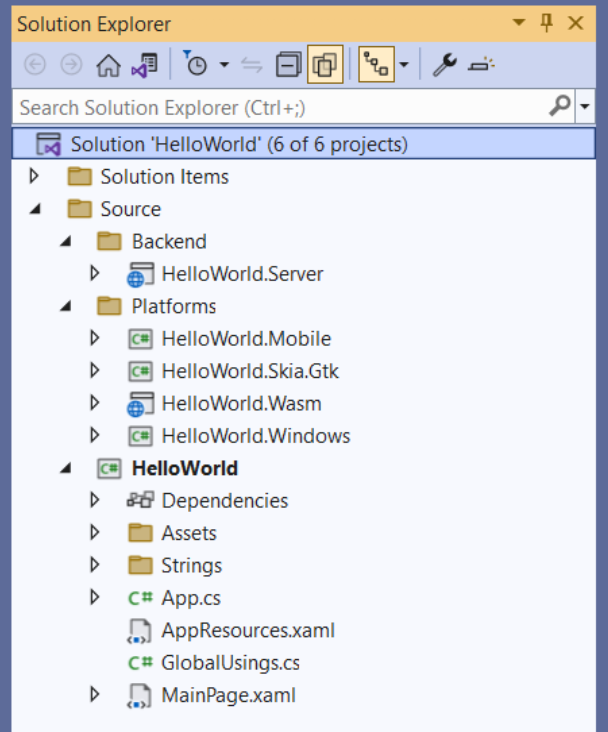
Make sure Visual Studio has your WinUI 3 project open, then copy the child XAML elements from MainWindow.xaml in the WinUI 3 project to your MainPage.xaml file in the Uno Platform project. The MainPage view XAML should look like this:
<Page x:Class="HelloWorld.MainPage"
xmlns="http://schemas.microsoft.com/winfx/2006/xaml/presentation"
xmlns:x="http://schemas.microsoft.com/winfx/2006/xaml"
xmlns:local="using:HelloWorld"
xmlns:d="http://schemas.microsoft.com/expression/blend/2008"
xmlns:mc="http://schemas.openxmlformats.org/markup-compatibility/2006"
mc:Ignorable="d"
Background="{ThemeResource ApplicationPageBackgroundThemeBrush}">
<!-- Below is the code you copied from MainWindow: -->
<StackPanel Orientation="Horizontal"
HorizontalAlignment="Center"
VerticalAlignment="Center">
<TextBlock x:Name="myText"
Text="Hello world!"
Foreground="Red"/>
</StackPanel>
</Page>
Launch the HelloWorld.Windows target. Observe that this WinUI app is identical to the previous tutorial.
You can now build and run your app on any of the supported platforms. To do so, you can use the debug toolbar drop-down to select a target platform to deploy:
To run the WebAssembly (Wasm) head:
- Right-click on the
HelloWorld.Wasmproject, select Set as startup project - Press the
HelloWorld.Wasmbutton to deploy the app - If desired, you can use the
HelloWorld.Serverproject as an alternative
- Right-click on the
To debug for iOS:
Right-click on the
HelloWorld.Mobileproject, select Set as startup projectIn the debug toolbar drop-down, select an active iOS device or the simulator. You'll need to be paired with a Mac for this to work.
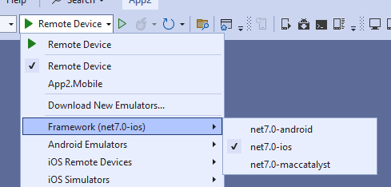
To debug for Mac Catalyst:
- Right-click on the
HelloWorld.Mobileproject, select Set as startup project - In the debug toolbar drop-down, select a remote macOS device. You'll need to be paired with one for this to work.
- Right-click on the
To debug the Android platform:
- Right-click on the
HelloWorld.Mobileproject, select Set as startup project - In the debug toolbar drop-down, select either an active Android device or the emulator
- Select an active device in the "Device" sub-menu
- Right-click on the
To debug on Linux with Skia GTK:
- Right-click on the
HelloWorld.Skia.Gtkproject, and select Set as startup project - Press the
HelloWorld.Skia.Gtkbutton to deploy the app
- Right-click on the
Now you're ready to start building your multi-platform application!